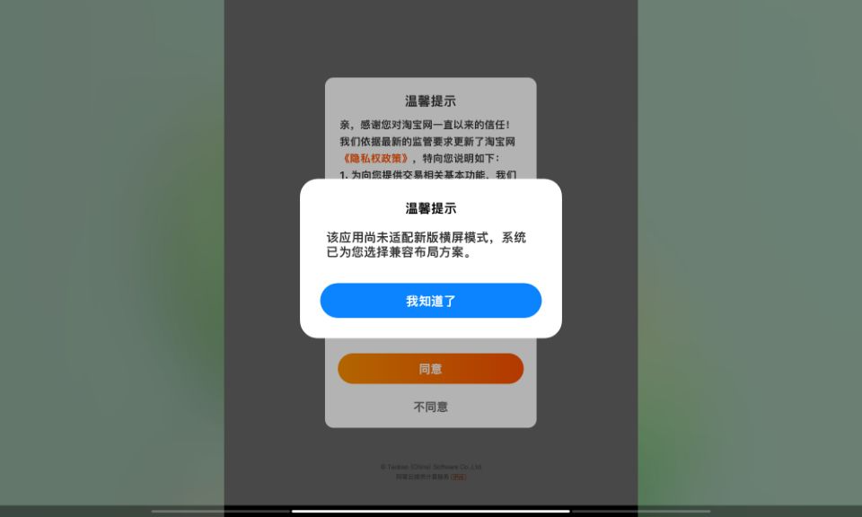
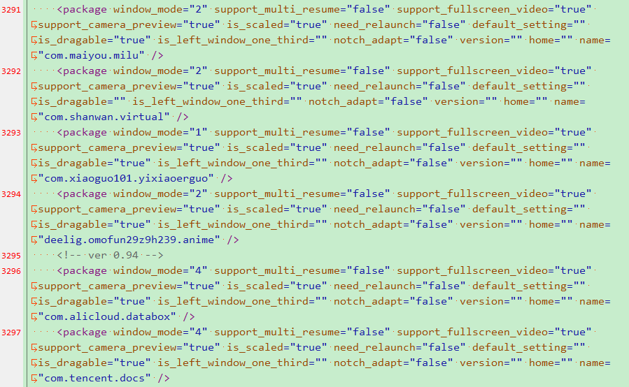
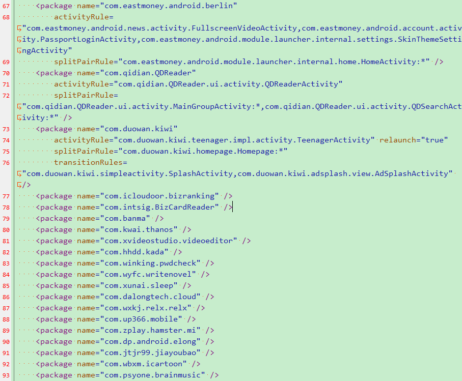

【原创教程】MIUI平行视界全探索
查看如何打包到 ROM 包的请直接跳转到第 4 章
# 1.MIUI 的平行视界概述
MIUI 的平行视界分为两个时代，基于安卓 11 的魔窗版时代和基于安卓 12 / 安卓 13 的官改时代。
所谓魔窗版时代，MIUI 的平行视界使用了 magicWindows 方案，该方案同样用在了安卓 10，安卓 11 和安卓 12 版的鸿蒙，ColorOS 以及 OriginOS 上。魔窗方案的优点是，即使应用厂商什么都不做，依旧可以实现两种预设模式的平行视界逻辑。对于应用厂商来说，这是最方便的。
所谓官改版时代，MIUI 使用了安卓 12L 的 Activity Embedding 方案。官方方案的特点是，厂商必须主动适配，自己写配置文件才能实现平行视界。
小米过于相信谷歌的号召力，而事实上根本没几家 APP 适配官方方案，所以无奈之下，小米只能亲自下场，替常见的 APP 写配置文件，并增加一些默认的窗口逻辑。这种在官方接口上自己再修改补全的方案，我称之为官改方案。
关于魔窗方案和官方方案的更多区别，我将会在接下来的时间制作一期视频，通过视频的方式进行更直观的演示。读者可以关注我的 B 站账号。
# 2. 魔窗版的实现方法
魔窗版的平行视界由系统中的两个文件进行控制，分别是应用列表的 magic_window_setting_config.xml，和配置应用横屏属性的 magicWindowFeature_magic_window_application_list.xml 。
这里我们简单解析一下两个文件的内容。
应用列表位置 /data/system/users/0/magic_window_setting_config.xml：
1 | <setting name="com.yjs.android" miuiMagicWinEnabled="true" miuiDialogShown="false" miuiDragMode="0" /> |
参数详解：
1 | name="" //应用包名 |
魔窗适配对话框长这样：

应用配置位置 /data/system/magicWindowFeature_magic_window_application_list.xml
1 | <package window_mode="1" support_multi_resume="false" support_fullscreen_video="true" support_camera_preview="true" is_scaled="true" need_relaunch="false" default_setting="" is_dragable="false" is_left_window_one_third="" notch_adapt="false" version="8.0.9" home="" name="com.tencent.mm" /> |
这里的参数就需要详解一下了：
1 | window_mode="1" //理论上1为普通模式，即主页始终在左侧，2为购物模式，即左侧不断被新产生的右侧界面覆盖，4为全屏拉伸模式，-1为先纵向全屏拉伸然后再旋转到横向，0为信箱模式。但是实际测试发现1和2区别不大，推荐为2，大部分应用都能设置为平行视界 |
所以，添加自定义的软件，以及修改已有软件的配置，只需要先在 magic_window_setting_config.xml 中添加一行声明，然后再在 magicWindowFeature_magic_window_application_list.xml 中为它配置一个横屏方案即可。具体请自行实验。

这里得夸一句安卓 11 的 MIUI 工程师，官方版适配就为 3200 余款应用适配了横屏配置，当年雷军发布会上的那句我们为 3000 款应用进行了适配也不是空话。
但侧面也证明了，魔窗平行视界方案的适配简介，方便，快速，成本低，支持的配置项简单有效，功能全面，非常适合扩展平行视界生态。
# 3. 官改版的实现方法
官改版的平行视界和魔窗版类似，也是由系统中的两个文件进行控制，分别应用列表 embedded_setting_config.xml，和应用横屏配置 embedded_rules_list.xml 。
应用列表位置 /data/system/users/0/embedded_setting_config.xml
1 | <setting name="com.yjs.android" embeddedEnable="true" /> |
不需要太多解释，一看就懂。
应用配置列表有两个，一个在 /product/etc/embedded_rules_list.xml，是出厂配置，安卓 12 版的 MIUI 有效；另一个是 /data/system/cloudFeature_embedded_rules_list.xml，安卓 13 版的 MIUI 有效。
1 | <package name="com.tencent.mm" fullRule="nra:cr:rcr" /> |
参数解析：
1 | name="" //包名 |
我们不难发现，官改版的配置文件比魔窗版复杂很多，可以详细配置 12L 官方的 embedding windows 中的几乎所有内容。但是这个适配工程量极大，所以就有了这个神奇的一幕：

也就是说，MIUI 工程师在写了不到 73 个软件后，决定对其他软件不再手动写横屏配置了，就非常的简 (tou) 洁 (lan)。当然官方平行视界适配成本高（连购物模式都没有现成接口）也是一个原因。
MIUI 工程师为安卓 12 和安卓 13 版的 MIUI For Pad 共添加了约 1912 款应用，比安卓 11 的 MIUI For Pad 的 3300 余款少了接近一半。
添加自定义的软件，以及修改已有软件的配置，依旧只需要先在 embedded_setting_config.xml 中中添加一行声明，然后再在 embedded_rules_list.xml 配置中为它配置一个横屏方案即可。但是查找每个页面的 activity 工作量巨大，所以我们也可以用简 (tou) 洁 (lan) 的写法来实现平行视界，只给它配置 splitRadio 等几个简单参数即可。
比如在我的模块里，我写成这样：
1 | <!-- MIUI_MagicWindow+ --> |
就可以快速的添加自己想增加平行视的应用了。
# 以下技术分享来自 @一只无言菌：
如果我们有时间也可以对一个软件进行精修，比如像这样：
1 | <package name="tv.danmaku.bili" splitRatio="0.42" activityRule="tv.danmaku.bili.MainActivityV2" transitionRules="tv.danmaku.bili.MainActivityV2" splitPairRule="tv.danmaku.bili.MainActivityV2:*,com.bilibili.search.main.BiliMainSearchActivity:*,com.bilibili.bplus.followinglist.quick.consume.QuickConsumeActivity:*,tv.danmaku.bili.ui.videodownload.VideoDownloadListActivity:*,com.bilibili.lib.ui.GeneralActivity:*,tv.danmaku.bili.ui.favorite.FavoriteBoxActivity:*,tv.danmaku.bili.ui.main2.WatchLaterActivity:*,com.bilibili.lib.ui.GeneralActivity:*,com.bilibili.app.preferences.BiliPreferencesActivity:*,com.mall.ui.page.search.SearchFragmentLoadActivity:*" /> |
# 这里有一个奇技淫巧：
如果应用不支持 activityRule=""，则可以考虑把首页和它能跳转到的下一个 activity 加入到 transitionRules 就可以实现类似 activityRule="" 的功能。以知乎 APP 为例：
1 | <package name="com.zhihu.android" splitRatio="0.33" activityRule="com.zhihu.android.app.ebook.activity.EBookHostActivity,com.zhihu.android.app.ui.activity.MainActivity,com.zhihu.android.app.ui.activity.LauncherActivity" splitPairRule="com.zhihu.android.app.ui.activity.MainActivity:*,com.zhihu.android.app.SearchActivity:*" transitionRules="com.zhihu.android.app.ebook.activity.EBookHostActivity,com.zhihu.android.app.ui.activity.LaunchAdActivity,com.zhihu.android.app.ui.activity.TransActivity,com.zhihu.android.app.ui.activity.LauncherActivity,com.zhihu.android.panel.ui.attach.PanelAttachActivity,com.zhihu.android.app.ui.activity.SocialOauthActivity,com.zhihu.android.app.ui.activity.DealLoginActivity,com.zhihu.android.app.SearchActivity,com.zhihu.android.app.ui.activity.MainActivity,com.coolapk.market.view.contact.FriendListActivity:*" /> |
注意，只有将全屏的 Activity 放到 activityRule 和 transitionRules 里，才能保证该 Activity 基本不出现突然半屏显示的情况。
# 这里给出几个比较常见的模板供大家参考：
只有一个 Activity 怎么适配？
1 | <package name="应用包名" activityRule="仅有的一个Activity" transitionRules="仅有的一个Activity" splitRatio="0.42" /> |
首页以及部分页面全屏，但是有的界面分屏怎么适配？
1 | <package name="应用包名" activityRule="全屏的Activity" transitionRules="全屏的Activity" splitPairRule="全屏的Activirty:*" splitRatio="0.42" /> |
首页以及部分页面全屏，但是想要递进关系，怎么适配？
1 | <package name="应用包名" activityRule="全屏的Activity" transitionRules="全屏的Activity" splitPairRule="首页的Activirty:界面1的Activirty,界面1的Activirty:界面2的Activirty,界面2的Activirty:界面3的Activirty" splitRatio="0.42" /> |
强制整个应用横屏怎么适配？
1 | <package name="应用包名" scaleMode="1" fullRule="nra:cr:rcr" /> |
# 4. 如何打包到 ROM 包
解包文件对应分区，修改对应的文件，然后复制到原路径下覆盖原文件，重新打包分区即可。
对于安卓 11 版的 MIUI For Pad，需要覆盖以下两个文件。
/data/system/users/0/magic_window_setting_config.xml
/data/system/magicWindowFeature_magic_window_application_list.xml
对于安卓 12 / 安卓 13 版的 MIUI For Pad，需要覆盖以下三个文件。
/data/system/users/0/embedded_setting_config.xml
/product/etc/embedded_rules_list.xml
/data/system/cloudFeature_embedded_rules_list.xml
所有文件可以通过解包《完美横屏应用计划》模块获得。
# 5. 如何打包成模块
由于这些文件都不在 system 分区，所以传统模块的文件替换法并不会生效。这里我们采用 post-fs-data.sh 来实现这个功能。
在 post-fs-data.sh 中，只需要用简单的移动和复制命令即可实现对文件的替换。
在旧版的模块中，我们使用 mv 语句直接复制这个文件，但是这样会导致云控后文件失效。
1 | For Android 11 |
以上文件会被 MIUI 服务器云控，所以我尝试一些方法来干掉云控。比如最简单的权限法，给这些文件的权限限制为 440，使 system 不再对它有修改的权限，以为从一定程度上解决云控的问题。事实证明云控直接替换文件，关闭它的写入权限几乎没有用。
1 | Disable Cloud Feature |
所以我们重新分析一下云控原理。在用户使用平板时，云控 APP 下载新的配置文件到你的平板电脑，在下次启动时加载这个新文件，实现云控。也就是说，我们只要赶在加载前，把文件替换掉，就可以了。新版模块里我的文件改成这么写：
1 | For Android 11 |
在每次系统启动前，用 cp -l 文件实现从模块内文件到配置文件的软链接，等待系统启动时，就会加载我们想要的它加载的文件，从而实现干掉云控。
当然这样也带来一个问题，如果需要修改这个配置文件，你需要修改的是模块内的文件而不是模块外的文件，路径为 /data/adb/modules/MIUI_MagicWindow+/common/
这样替换的文件不会在模块卸载时被替换回去，所以我们需要写一个 uninstall.sh，并在其中加入文件替换回去的命令，以及还原文件读者权限的命令（魔窗配置文件会在删除后重启自动生成，直接删除就行）
1 | Remove Files |
至此，一个模块就写好了。